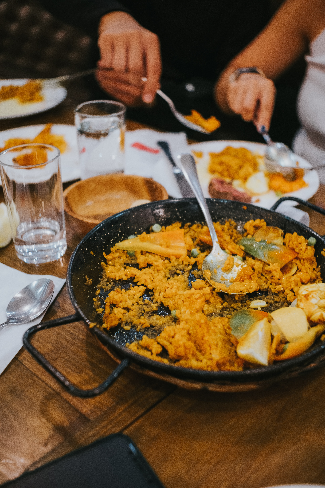

Paella doesn't have to be off limits just because you're Vegetarian!
Paella is a famous Spanish dish with its roots in Valencia, Spain.
It's a flavorful rice dish cooked with saffron, paprika, and ingredients
like chicken, seafood, and vegetables. Paella is traditionally made in a wide,
shallow pan, creating a delicious crispy layer at the bottom called "socarrat."
This dish started as a simple, communal meal among farmers and has evolved into various types,
like seafood paella or mixed paella. Today, it's a symbol of Spanish cuisine enjoyed worldwide,
offering a taste of Spain's delicious flavors and history.